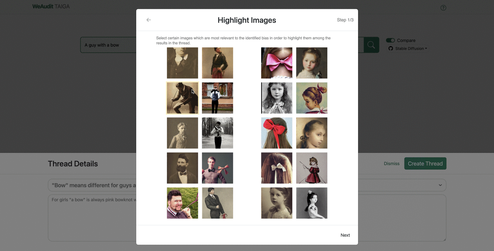

How does TAIGA work?
1/4 Search Prompts
Search prompt you are interested to see the generated results.
2/4 Create Thread
Create your own thread and write about bias you found.

3/4 Highlight Images
Highlihgt the images that you think worth attention.
4/4 Post Thread
Preview your thread and post it to WeAudit forum.
What are some trending threads?